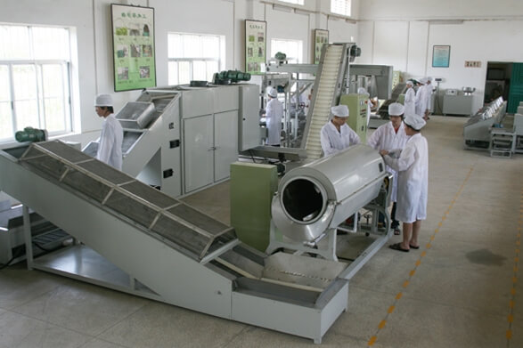

陕西汇源健康食品有限公司由原陕西高科生物有限公司于2007年改制成立，注册资金300万元人民币，公司占地面积5万余平方米，无菌生产车间2000平方米，还有国内一流的喷雾干燥设备，可生产健康类食品及休闲食品，年生产系列产品1.5万吨，公司下设技术研发部，生产部，产品营销部。
公司员工85%为大专以上文化程度，其中教授2名，高级职称5人，专业技术人员26名。公司联合陕西科技大学生命科学院，杨凌农大陕西农副产品加工院的专家教授，对西部地区的农副产品深加工深入研究，根据古代传统养生食疗法，遵循“药食同源”的理论方针，相继开发了“乐备尔”牌苦荞茶，“瑭伴侣”牌苦荞鹰嘴豆粉粒，“御唐春”牌胶原蛋白，“全霡通”牌纳豆颗粒等系列养生食品。
2008年“乐备尔”牌植物胰蛋白（苦荞鹰嘴豆粉粒）荣获第14届中国杨凌农业高科技成果博览会“后稷奖”。2011年开发的年产1000吨特膳降糖营养食品项目被陕西省科技厅列为重大科技项目。同年为满足公司生产需要在陕西淳化建成万亩苦荞种植基地，形成“公司+产品研发+农副产品基地+市场营销”的经营模式，并创建了陕西中小企业创新研发中心。
陕西汇源健康食品有限公司秉承“服务社会，造福人类”的宗旨，竭力打造成为国内一流健康食品企业，诚邀各方朋友共创伟业！